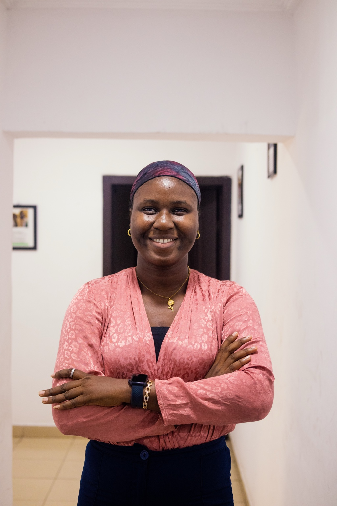

ABOUT ME
Building practical solutions from real-world problems.
My work sits at the intersection of administration, operations, reporting, data management, and technology.
I enjoy identifying repetitive or inefficient processes, understanding the problem behind them, and creating practical systems that make work easier, improve reporting, and provide better visibility for decision-making.
My experience includes administrative coordination, program operations, data collection and management, reporting, dashboards, process automation, stakeholder coordination, and the development of digital tools for nonprofit programs.
